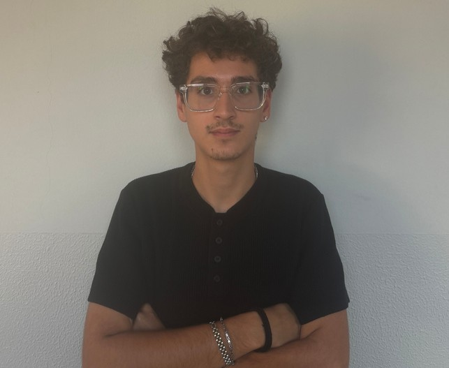

Studente in Networking and Cloud, con basi informatiche solide e attenzione ai dettagli. Le challenge tecnologiche a cui ho partecipato mi hanno spinto fuori dalla mia comfort zone, migliorando problem solving, gestione delle scadenze, lavoro in team e public speaking. Punto a mettere presto queste competenze al servizio di un contesto aziendale stimolante.
Grazie alle esperienze maturate nei progetti scolastici (PCTO) e ai piccoli lavori svolti durante il percorso, ho imparato a mantenere il focus, organizzarmi al meglio e lavorare con efficacia anche sotto pressione. Il mio obiettivo è crescere come professionista IT e ottenere le certificazioni di settore, portando in azienda un approccio concreto e orientato al problem solving.
Gestione del servizio clienti con approccio cordiale e professionale, cura dell'organizzazione del banco in contesti dinamici.
Programmazione e scripting per ambienti virtuali, progettazione interattiva sulla piattaforma Roblox.
Supporto tecnico operativo nello sviluppo software e nel testing applicativo.
Sviluppo, in un team multidisciplinare (Network & Cloud, Machine Learning, Metaverso), di un concept di datacenter sostenibile integrato nella rigenerazione urbana: storage energetico con batterie a CO₂, riqualificazione di aree industriali dismesse, forestazione urbana e ottimizzazione dei consumi tramite un orchestratore IA.
Guida di un team in una sfida di innovazione e sostenibilità: sviluppo di un progetto per il riciclo delle acque reflue tramite vaporizzatori, con l'obiettivo di trasformare gli scarti in una risorsa utile.
Coordinamento di un progetto tecnologico e di social campaign per incoraggiare la guida sicura sotto i 30 km/h. Premio "Best Project" dell'evento.
Sviluppo in team di un progetto tecnologico per rendere un supermercato completamente accessibile alle persone con disabilità, con documentazione dei costi per un modello economico sostenibile.
Progettazione e programmazione del robot umanoide NAO per consegnare medicinali all'interno di una struttura sanitaria, con un sistema di navigazione per raggiungere il paziente corretto.
Allena mindset, resistenza e capacità di mantenere il focus su un obiettivo.
Concentrazione e gestione emotiva, anche nei momenti di forte tensione.
Curiosità per sapori e culture gastronomiche differenti.